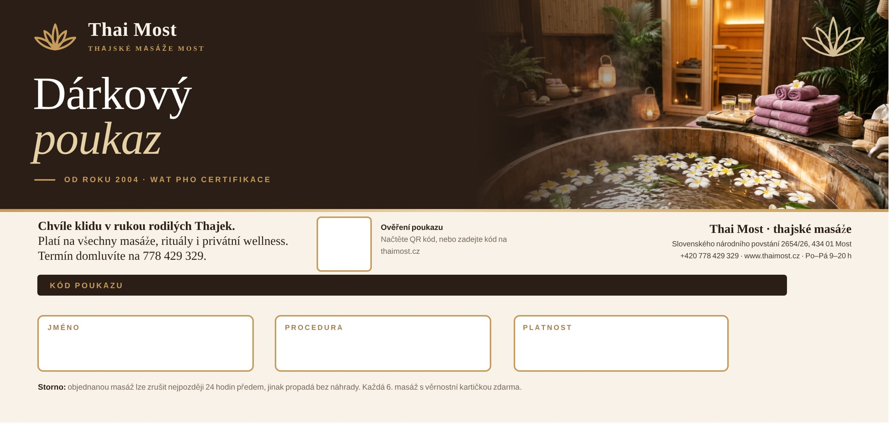

Dárkový poukaz na masáž v Mostě
Darujte hodinu klidu v rukou rodilých Thajek. Poukaz vystavíme na libovolnou částku, nebo na konkrétní masáž či wellness – obdarovaný si termín domluví sám.

Jak poukaz objednat
Poukaz si navrhnete online na úvodní stránce: zvolíte částku nebo masáž, doplníte jméno obdarovaného a uvidíte náhled. Objednávku pošlete do salonu a recepce se vám ozve. Poukaz si vyzvednete v salonu, nebo ho pošleme jako PDF e-mailem.
Na co poukaz platí
Na všechny masáže a rituály z ceníku i na privátní wellness a párovou masáž. Poukaz platí půl roku od nákupu – do té doby je potřeba se na masáž objednat.
Tipy na dárek
- Tradiční thajská masáž – od 800 Kč
- Thajská olejová masáž – od 800 Kč
- Siam massage – od 1 880 Kč
- Whirlpool a sauna – od 600 Kč
Dárkové poukazy – na co se ptáte
Na co dárkový poukaz platí?
Na všechny masáže, rituály i privátní wellness v Thai Most. Vystavíme ho na libovolnou částku, nebo na konkrétní masáž.
Jak dlouho poukaz platí?
Půl roku od nákupu. Do té doby je potřeba se objednat na masáž – stačí zavolat na +420 778 429 329.
Jak poukaz dostanu?
Objednáte ho online a vyzvednete v salonu, nebo ho pošleme jako PDF e-mailem.
Jak si obdarovaný domluví termín?
Telefonicky na +420 778 429 329 nebo přes online objednávku na webu. Při objednání stačí říct, že má poukaz.